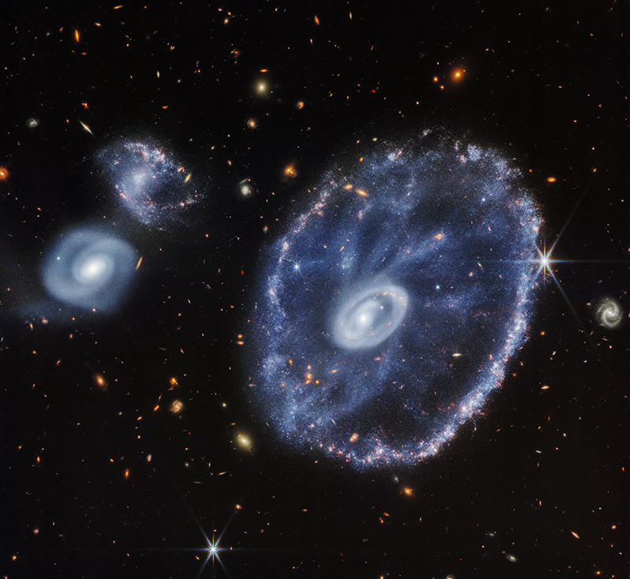

Webb's Science Mission Begins |
||
|---|---|---|
|  |
We wonder. It’s our nature. |
|
|
The James Webb Space Telescope is an ambitious scientific endeavor to answer these questions. Webb builds on the legacy of previous space-based telescopes to push the boundaries of human knowledge even further, to the formation of the first galaxies and the horizons of other worlds. |
||